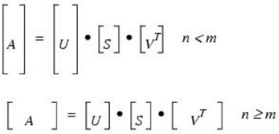

The LA_SVD procedure computes the singular value decomposition (SVD) of an n-columns by m-row array as the product of orthogonal and diagonal arrays:
A is real: A = U S VT
A is complex: A = U S VH
where U is an orthogonal array containing the left singular vectors, S is a diagonal array containing the singular values, and V is an orthogonal array containing the right singular vectors. The superscript T represents the transpose while the superscript H represents the Hermitian, or transpose complex conjugate.
If n < m then U has dimensions (n x m), S has dimensions (n x n), and VH has dimensions (n x n). If n ≥ m then U has dimensions (m x m), S has dimensions (m x m), and VH has dimensions (n x m). The following diagram shows the array dimensions:

LA_SVD is based on the following LAPACK routines:
|
Output Type |
LAPACK Routine |
|
|
QR Iteration |
Divide-and-conquer |
|
|
Float |
sgesvd |
sgesdd |
|
Double |
dgesvd |
dgesdd |
|
Complex |
cgesvd |
cgesdd |
|
Double complex |
zgesvd |
zgesdd |
For details see Anderson et al., LAPACK Users' Guide, 3rd ed., SIAM, 1999.
LA_SVD, Array, W, U, V [, /DOUBLE] [, /DIVIDE_CONQUER] [, STATUS=variable]
The real or complex array to decompose.
On output, W is a vector with MIN(m, n) elements containing the singular values.
On output, U is an orthogonal array with MIN(m, n) columns and m rows used in the decomposition of Array. If Array is complex then U will be complex, otherwise U will be real.
On output, V is an orthogonal array with MIN(m, n) columns and n rows used in the decomposition of Array. If Array is complex then V will be complex, otherwise V will be real.
Note: To reconstruct Array, you will need to take the transpose or Hermitian of V.
If this keyword is set, then the divide-and-conquer method is used to compute the singular vectors, otherwise, QR iteration is used. The divide-and-conquer method is faster at computing singular vectors of large matrices, but uses more memory and may produce less accurate singular values.
Set this keyword to use double-precision for computations and to return a double-precision (real or complex) result. Set DOUBLE = 0 to use single-precision for computations and to return a single-precision (real or complex) result. The default is /DOUBLE if Array is double precision, otherwise the default is DOUBLE = 0.
Set this keyword to a named variable that will contain the status of the computation. Possible values are:
| • | STATUS = 0: The computation was successful. |
| • | STATUS > 0: The computation did not converge. The STATUS value specifies how many superdiagonals did not converge to zero. |
Note: If STATUS is not specified, any error messages will output to the screen.
Construct a sample input array A, consisting of smoothed random values:
; Create a smoothed random array:
n = 100
m = 200
seed = 12321
a = SMOOTH(RANDOMN(seed, n, m, /DOUBLE), 5)
; Compute the SVD and check reconstruction error:
LA_SVD, a, w, u, v
arecon = u ## DIAG_MATRIX(w) ## TRANSPOSE(v)
PRINT, 'LA_SVD error:', MAX(ABS(arecon - a))
; Keep only the 15 largest singular values
wfiltered = w
wfiltered[15:*] = 0.0
; Reconstruct the array:
afiltered = u ## DIAG_MATRIX(wfiltered) ## TRANSPOSE(v)
percentVar = 100*(w^2)/TOTAL(w^2)
PRINT, 'LA_SVD Variance:', TOTAL(percentVar[0:14])
IDL prints:
LA_SVD error: 1.6209256e-014
LA_SVD variance: 82.802816
Note: More than 80% of the variance is contained in the 15 largest singular values.
|
5.6 |
Introduced |